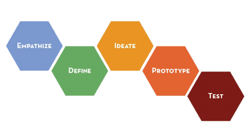
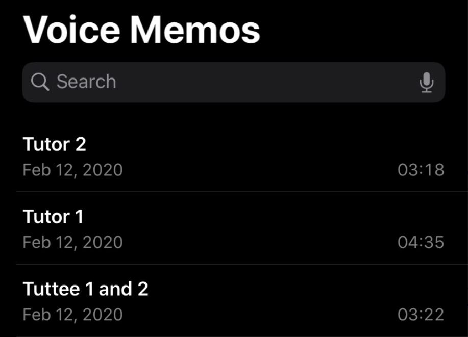
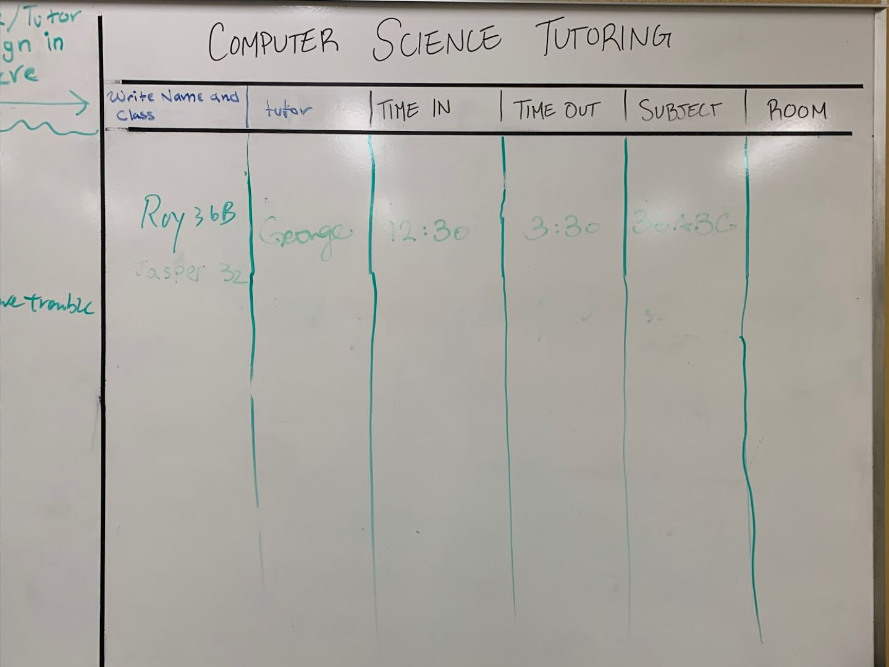
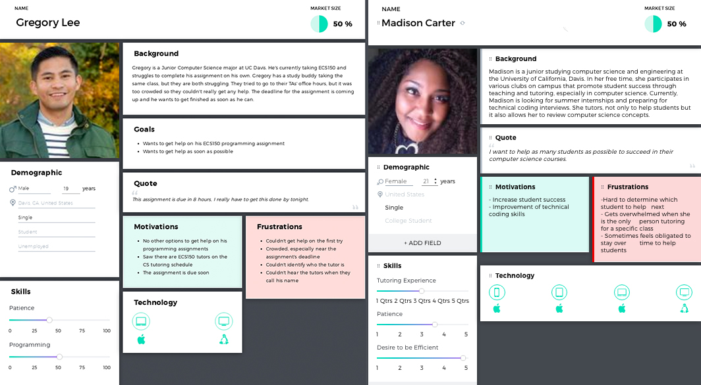
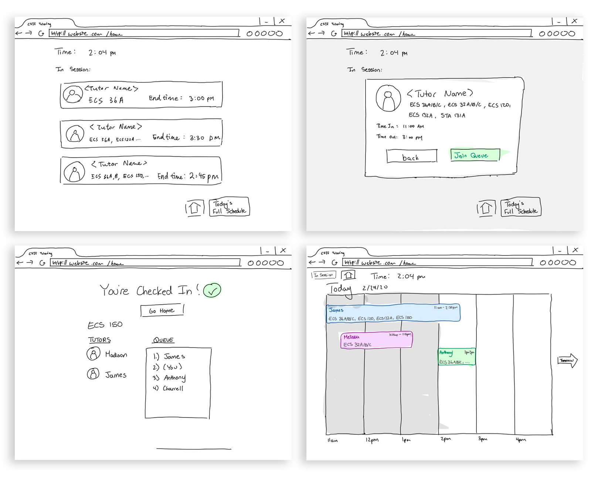
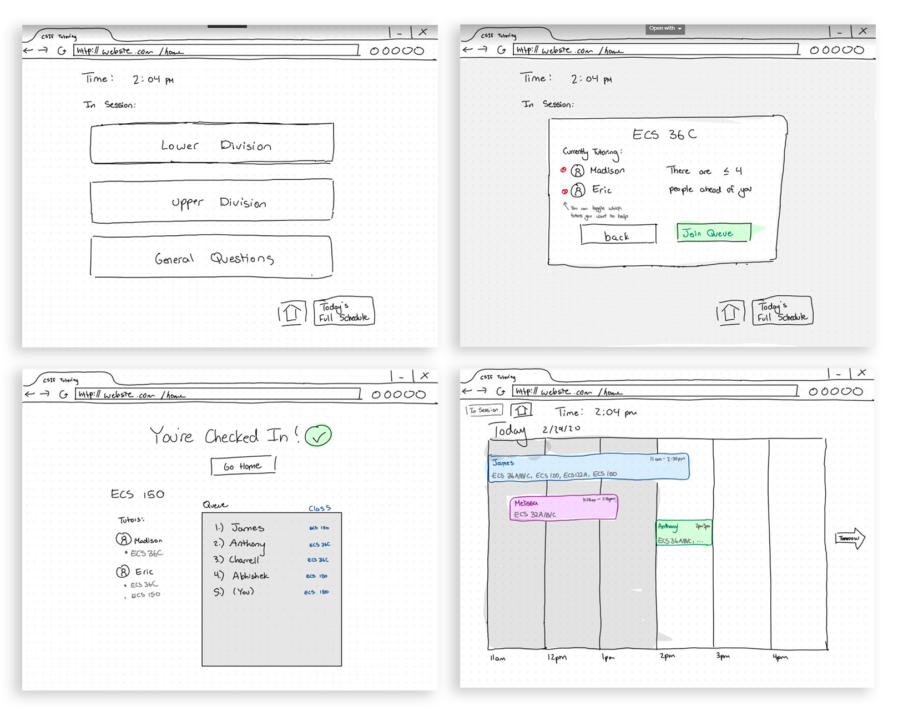

TutorQueue
User Experience Design | Adobe XD | Team of 4 | 10 Weeks

Overview
TutorQueue is a web application that provides a digital queueing system for students and tutors in the UC Davis Computer Science tutoring center. Computer Science courses are often project-oriented and many students come to the tutoring center to seek help. The current queuing system that exists at this tutoring center is a whiteboard where students write their name and wait for a tutor to find them. My team and I wanted to create a more efficient way of ensuring that students get the help they needed in a timely manner. Using the design thinking process as a guideline for our project , we designed a digital queuing system, TutorQueue, that matches tutees to the corresponding tutors in an organized manner.
This was the culminating project for my Human-Computer Interaction course which was also my first exposure to the idea of user experience and the design process. This was also an introduction to user research and prototyping for me.
Contributors
Design Process
For this project, we followed the Stanford Design Process which followed the non-linear steps of Empathizing, Defining, Ideating, Prototyping, and Testing.
Empathize
Our whole group was composed of students that have taken computer science courses before so we were all familiar with the current system that the tutoring center had in place. We also conducted interviews with both tutors and tutees at the center to get a better understanding of how each of them interact with the current system and how they feel about it.
Context
Above is the original queuing system in place at the CSIF (Computer Science Tutoring Center)
Research Synthesis
What we discovered was that tutors and tutees reported a lack of organization and protocol with the white board queuing system, and that many people didn’t even use the queuing system as they would just approach tutors directly. Tutors are often left flustered and disorganized with who to help next, and tutees are left unhelped or ignored. Tutors admitted that they’ve forgotten to erase their own names on the board and choose tutees at random when they don’t know who is next. Overall, this manual queuing system in place was seen to be prone to misuse and frustration for both tutors and tutees.
Define
From the observations and data we collected, we transitioned from empathizing with users to defining the problem statement. To help us organize what we’ve collected so far, we made a persona for the tutor and tutee users first to better direct pain points. From this, we addressed the overall problem:
How might we replace the existing queueing system by implementing a protocol so more students can receive the help they need from tutors in a timely manner?
This would be the problem that TutorQueue tackles head on.
Ideate
In brainstorming solutions for our prototype, we wanted to create an organized system where there is both accountability and order so that there would be no confusion as to who is next or who is supposed to be tutoring who at a certain time. At the same time, we wanted to ensure that this system would be intuitive and easy for tutees to check-in and receive help. We decided that a digital implementation via a dedicated computer at the center would preserve the integrity of the queue, and it being the sole device in which students would check in and out would minimize confusion and conflict in adding one’s self to the queue.
Prototype (Low-Fidelity)
We created our first low-fidelity prototype using digital sketches on my iPad device, sketching each screen that we would have users interact with and see. We made sketches of common interactions that users would have with the web application including checking in for the first time, changing or removing themselves from the queue, and tutors interacting with the queue to know who to help.
Test


After making our first prototype, we performed user testing with two Computer Science students. We tested by simulating interface interactions with manual screen changes performed by our team based on what users would “press” on the screen. We asked them to perform the set of common tasks without any suggestions and evaluated their decisions by asking them to “think out loud” when navigating the interface.
Revised Low-Fidelity Prototype
From the first round of testing, we discovered some systematic flaws in our organization of the queue, so we created a second draft of our low-fidelity prototype to reflect those fixes for the second round of testing.
Prototype (High-Fidelity)
We then turned to Adobe XD to create our high fidelity prototype of TutorQueue. Unfortunately we did not have the time to perform user testing following this stage, but we finally composed a final report of our project which can be accessed here.
Challenges
This Human-Computer Interaction course was offered mainly to Computer Science students so this was my group’s first experience working through the design process and user-oriented design. Nonetheless, this project was the perfect introduction to learning this type of thinking and perspective as our project had real world applications to it.
Reflection
This course set the foundation for design thinking for me and showed me that design is so much more than just aesthetic. This course introduced me to the idea of design being used as a form of problem solving and creating a desired experience for a user that is more than just “good”. Although the project group and I have since gone our separate ways, this is a project that I hope to revisit as this can be something that can be definitely implemented in our Computer Science tutoring center.